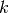
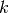
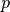
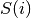
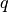
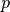
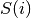

scipy.cluster.hierarchy.leaders¶
- scipy.cluster.hierarchy.leaders(Z, T)[source]¶
Returns the root nodes in a hierarchical clustering.
Returns the root nodes in a hierarchical clustering corresponding to a cut defined by a flat cluster assignment vector T. See the fcluster function for more information on the format of T.
For each flat cluster
 of the  flat clusters
represented in the n-sized flat cluster assignment vector T,
this function finds the lowest cluster node
of the  flat clusters
represented in the n-sized flat cluster assignment vector T,
this function finds the lowest cluster node  in the linkage
tree Z such that:
in the linkage
tree Z such that:- leaf descendents belong only to flat cluster j
(i.e. T[p]==j for all  in  where
is the set of leaf ids of leaf nodes descendent
with cluster node )
- there does not exist a leaf that is not descendent with
that also belongs to cluster
(i.e. T[q]!=j for all  not in ). If
this condition is violated, T is not a valid cluster
assignment vector, and an exception will be thrown.
Parameters : Z : ndarray
The hierarchical clustering encoded as a matrix. See linkage for more information.
T : ndarray
The flat cluster assignment vector.
Returns : L : ndarray
The leader linkage node id’s stored as a k-element 1-D array where k is the number of flat clusters found in T.
L[j]=i is the linkage cluster node id that is the leader of flat cluster with id M[j]. If i < n, i corresponds to an original observation, otherwise it corresponds to a non-singleton cluster.
For example: if L[3]=2 and M[3]=8, the flat cluster with id 8’s leader is linkage node 2.
M : ndarray
The leader linkage node id’s stored as a k-element 1-D array where k is the number of flat clusters found in T. This allows the set of flat cluster ids to be any arbitrary set of k integers.
- leaf descendents belong only to flat cluster j
(i.e. T[p]==j for all  in  where
is the set of leaf ids of leaf nodes descendent
with cluster node